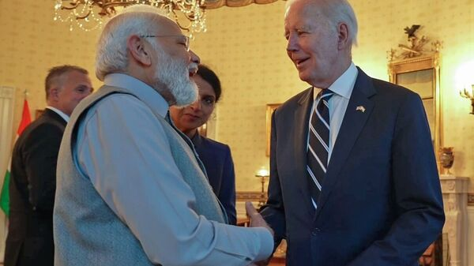

Modi's US Visit Underlines India's Growing Geopolitical Heft
Image Credits https://www.livemint.com/opinion/online-views/modis-us-visit-underlines-india-s-growing-geopolitical-heft-11687766462905.html

India's Prime Minister Narendra Modi recently concluded his visit to the United States, which highlighted the growing geopolitical influence of the world's second-most populous country. During his trip, Modi met with several US government officials, including President Joe Biden, Vice President Kamala Harris, and Secretary of State Antony Blinken. The visit was marked by several significant developments, including the signing of several partnership agreements and trade deals between India and the US.
Examples of India's Growing Geopolitical Influence
India's emergence as a major global player is due to several factors, including its large population, booming economy, and strategic location. The country has also invested heavily in its military, space program, and technology sector in recent years. Here are a few examples of India's growing geopolitical heft:
- Diplomatic Relations: India has established diplomatic relations with almost every country in the world, making it an important ally and partner on the global stage. The country has also played a leading role in several international organizations, including the United Nations, the World Trade Organization, and the International Atomic Energy Agency.
India's economy is the fifth largest in the world, with a GDP of over $3 trillion. The country is projected to become the third largest economy by 2030, surpassing Japan and Germany. India is also home to several large multinational corporations, including Tata Group, Reliance Industries, and Infosys. - Space Program: India's space program has made significant strides in recent years, with successful missions to the Moon and Mars. The country is also working on developing a satellite-based navigation system, similar to GPS, which will provide positioning information to Indian users as well as those in neighboring countries.
Case Studies: Partnerships with Other Countries
India has formed several strategic partnerships with other countries around the world, which have further enhanced its geopolitical influence. Here are a few examples of these partnerships:
- United States: India and the US have formed a strong partnership in recent years, based on shared democratic values and strategic interests. The two countries have signed several agreements related to defense, trade, and technology, including the latest Quad alliance with Australia and Japan.
- Japan: India has also deepened its partnership with Japan in recent years, with a focus on infrastructure development, defense cooperation, and people-to-people exchanges. The two countries have also signed agreements related to high-speed rail, defense equipment, and peaceful use of nuclear energy.
- Israel: India and Israel have a strategic partnership based on shared concerns about terrorism and economic development. The two countries have signed several agreements related to defense, cybersecurity, and technology, and regularly conduct joint military exercises.
Conclusion: India's Growing Geopolitical Heft
India's growing geopolitical influence is a result of several factors, including its large population, booming economy, and strategic location, as well as its diplomatic efforts and partnerships with other countries. As the country's influence continues to grow, it will likely play an even more prominent role on the global stage, shaping the future of international politics and economics. In conclusion, here are three key takeaways from India's growing geopolitical heft:
- India's emergence as a major global player is a result of several factors, including its large population, booming economy, and strategic location.
- The country has established diplomatic relations with almost every country in the world and has formed strategic partnerships with other countries around the world.
- As India's influence continues to grow, it will likely play an even more prominent role on the global stage, shaping the future of international politics and economics.
Curated by Team Akash.Mittal.Blog
Share on Twitter Share on LinkedIn